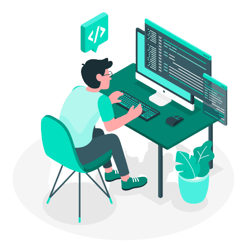

| AULA | DATA | CONTEÚDO PROGRAMÁTICO |
|---|---|---|
| 1 | 02/08 |
Unidade 0: Conteúdo: Instruções gerais sobre a disciplina. Objetivos: Descrever como será o funcionamento da disciplina ao longo do semestre, mais especificamente o formato das aulas, o tema do Projeto Final, os critérios de avaliação e os plantões de dúvidas (monitorias). Unidade 1: Conteúdo: Visão geral sobre o funcionamento da web, com foco nas interações navegador-servidor, e contextualização da Programação para Web. Objetivos: Descrever em linhas gerais os passos executados a cada requisição feita por um navegador a um servidor, interpretar uma mensagem HTTP e apresentar o que será discutido nesse semestre dentro do contexto de Programação para a Web. |
| 2 | 09/08 |
Unidade 2: Conteúdo: Hypertext Markup Language (HTML) e estrutura de documentos HTML (tags, declarações DOCTYPE, elementos HTML e atributos de elementos HTML). Objetivos: Eentender o que é HTML e construir documentos que contenham os elementos obrigatórios definidos no padrão. Unidade 3: Conteúdo: Exemplos de elementos HTML (parágrafos, títulos, imagens, hyperlinks, tabelas, listas e iFrames). Objetivos: Construir documentos HTML que utilizem os elementos mais comuns. |
| 3 | 16/08 |
Unidade 4: Conteúdo: O elemento HEAD de HTML. Objetivos: Construir documentos HTML que possuam o elemento obrigatório HEAD em sua estrutura. Unidade 5: Conteúdo: Layouts via HTML Objetivos: Estruturar o conteúdo de documentos HTML em layouts bem definidos. |
| 4 | 23/08 |
Unidade 6: Conteúdo: Cascade Style Sheets (CSS): definições, sintaxe e formas de utilização. Objetivos: Construir folhas de estilo que definam a aparência de um documento HTML e compreender a formatação que será aplicada a um elemento HTML por regras CSS já criadas. Unidade 7: Conteúdo: Cascade Style Sheets (CSS): propriedades de fundo de tela, de texto e de fonte. Objetivos: Criar folhas de estilo que explorem as propriedades de fundo de tela, texto e de fonte de elementos HTML. |
| 5 | 30/08 |
Unidade 8: Conteúdo: Cascade Style Sheets (CSS): propriedades abreviadas e o modelo de caixas (box model). Objetivos: Definição de layouts de páginas explorando o modelo de caixas de CSS. |
| 6 | 06/09 |
Unidade 9: Conteúdo: Programação no front-end com JavaScript: definições, sintaxe, instruções e o objeto DOM. Objetivos: Escrever programas básicos, em JavaScript, para serem executados em navegadores. Unidade 10: Conteúdo: Detecção e reação a eventos via JavaScript. Objetivos: Escrever programas, em JavaScript e que são executados no navegador, que reajam a eventos disparados pelo usuário. |
| 7 | 13/09 |
Unidade 11: Conteúdo: Manipulação de formulários HTML via JavaScript. Objetivos: Escrever programas, em JavaScript e que são executados no navegador, que manipulem dados fornecidos pelo usuário via formulários HTML. Unidade 12: Conteúdo: Orientação a objetos em JavaScript. Objetivos: Escrever programas, em JavaScript e que são executados no navegador, seguindo o paradigma de orientação a objetos. |
| 8 | 20/09 |
Aula para desenvolvimento da segunda parcial do Projeto Final. |
| 9 | 27/09 |
Unidade 13: Conteúdo: Programação no back-end com PHP: infraestrutura necessária e aspectos gerais da linguagem. Objetivos: Escrever programas simples, em PHP, que são executados no servidor. Unidade 14: Conteúdo: Aspectos específicos da linguagem PHP: operadores, estruturas de controle e funções Objetivos: Escrever programas em PHP para serem executados no servidor |
| - | 04/10 |
Tecnologia em Foco (não haverá aulas) |
| 10 | 11/10 |
Unidade 15: Conteúdo: PHP e formulários HTML, Server Side Includes. Objetivos: Escrever programas, em PHP, que recebam e manipulem dados enviados pelo usuário, do frontend, e a partir de formulários HTML. |
| 11 | 18/10 |
Unidade 16: Conteúdo: Orientação a objetos em PHP. Objetivos: Escrever programas, em PHP, seguindo o paradigma de orientação a objetos Unidade 17: Conteúdo: Acesso a Bancos de Dados em PHP via PHP Data Objects (PDO). Objetivos: Escrever programas, em PHP, que manipulem bancos de dados. |
| 12 | 25/10 |
Aula para desenvolvimento da terceira parcial do Projeto Final. |
| 13 | 01/11 |
Unidade 18: Conteúdo: Cookies e sessões em PHP. Objetivos: Escrever programas, em PHP, que mantenham sessões abertas durante a navegação de um mesmo usuário e permitam o fluxo de informações entre as páginas Unidade 19: Conteúdo: Comunicação assíncrona de dados entre back-end (aplicações em PHP) e front-end (scripts em JavaScript). Objetivos: Escrever aplicações, com front-end escrito em JavaScript e backend em PHP, que troquem dados de maneira assíncrona. |
| 14 | 08/11 |
Aula para desenvolvimento da terceira parcial do Projeto Final. |
| - | 15/11 |
FERIADO (não haverá aulas) |
| 15 | 22/11 |
Aula para conclusão (e entrega) da terceira parcial do Projeto Final. |
| - | 29/11 |
- |
| - | 06/12 | Semana de Estudos (não haverá aulas) |
| EXAME | 13/12 |
Exame Final |